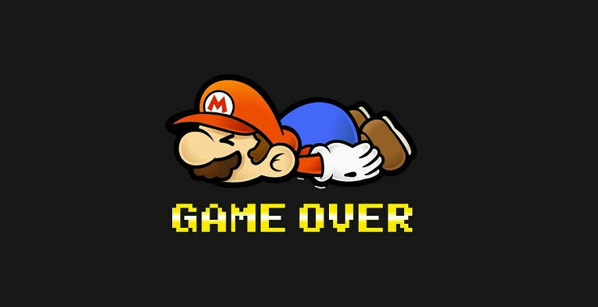
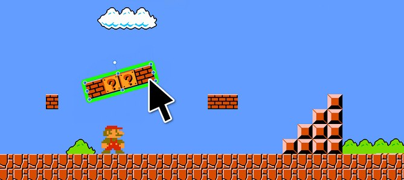
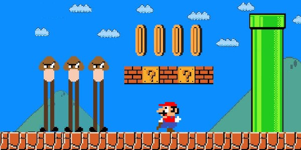
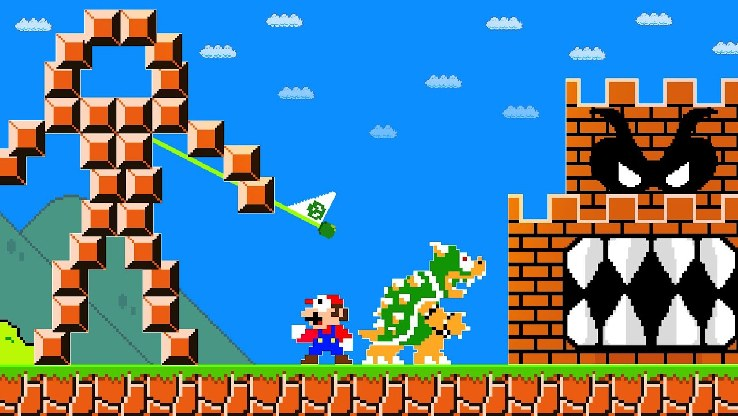
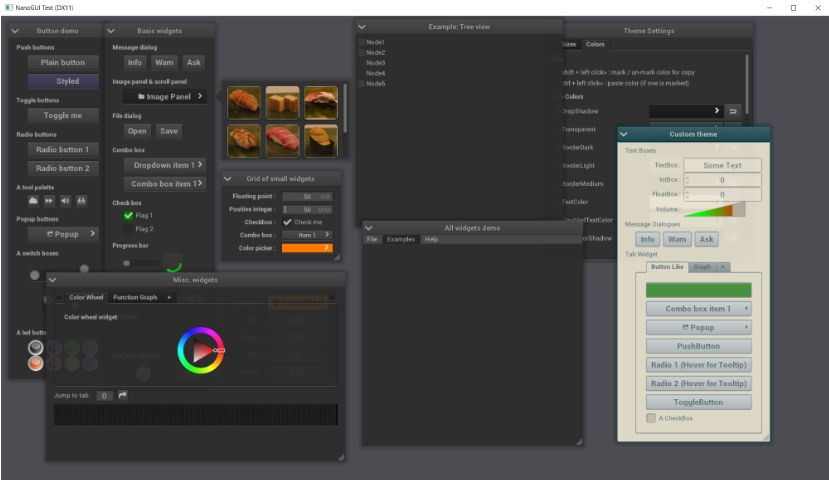
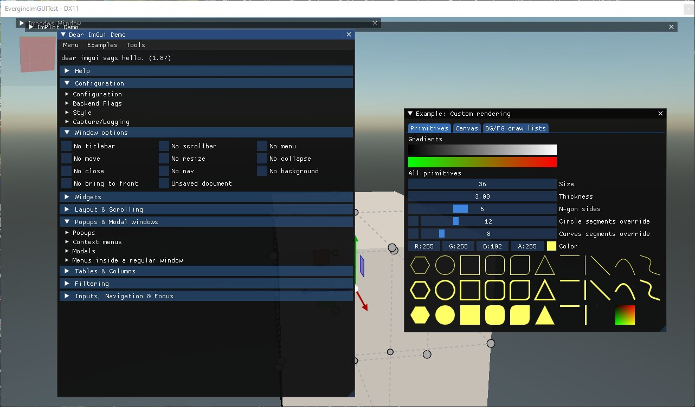
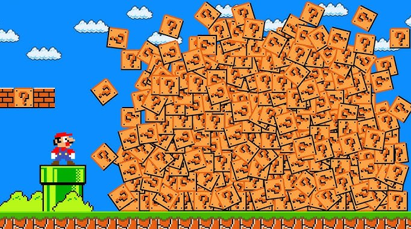

Когда деревья были большими, а игровые движки маленькими - выбора писать или не писать свой не стояло - если у тебя нет своего движка, фактически у тебя нет игры. Кто-то покупал чужой движок и наслаждался прекрасными велосипедами импортной сборки, в то время как другие пилили свое, на что уходили месяцы, если не годы.
Эта серия статей родилась как заметки на полях к замечательной книге Game Engine Architecture, книга большая, объемная и охватывает все аспекты создания движка. Но там нет нюансов практической разработки. А чтобы видеть нюансы надо понимать не только теорию, все же GAE больше теория, но знать как работает код игры изнутри. Чтобы понимать как, и главное почему, используются выбранные механизмы внутри игры, чтобы видеть проблемы с производительностью и архитектурой, как их искать и как чинить, для этого придется понять как работают и как создавались игровые движки.
Если мне не изменяет память - Кармак сказал, что лучший способ [создания игр] — написать собственный движок ( "The right move is to build your own engine" ), на что многие возразят: это вовсе не так просто. Но папа Doom'a известен не только своим вкладом в разработку игровых движков, но и довольно часто высказывался критически о развитии игровых движков в целом, и о преимуществах создания собственных технологических решений вместо использования готовых.
Эта философия, которой он придерживается на протяжении всей карьеры, была связана с тем, что собственный движок даёт разработчикам полный контроль над технологией и возможность создавать решения, заточенные под конкретные нужды их проектов.
Это часть серии «Game++»:
Game++. while (!game(over)) <=== Вы тут
Но, знаете, каждый по-своему прав — универсального ответа нет, всё зависит от конкретной ситуации. Может быть, создание собственного движка не так уж и сложно, как кажется? Зачем вообще это делать? И что вообще значит «создать игровой движок»?
Я работал с разными игровыми движками, и сделал с нуля парочку своих, а еще два до них ушли в мусорную корзину. На первом(третьем) было шипнуто три коммерческих игры, но без особо успеха и в итоге он ушел одной питерской студии за бешенную толпу вечнозеленых енотов в количестве аж 70^2 - это было 15 лет назад. И видел, как разработчики используют другие движки, как жалуются на них, как рассказывают о своих собственных решениях. Изучал исходный код других (открытых и не очень) движков. И думаю - есть кое-что сказать по этому вопросу, хотя, признаюсь, мой опыт может быть несколько предвзятым или однобоким, всегда хотел делать стратегии, но предлагали почему-то преимущественно шутеры.
Первый главный вопрос - зачем?
Во первых, вторых и третьих - это очень весело, обещаю
В четвертых - это опыт, за который многие компании готовы платить хорошие деньги.
Вы точно очень многому научитесь в процессе, что поможет вам лучше понимать другие движки, да и не только движки и, как следствие, поможет вам создавать игры в будущем, даже если вы выбросите свой собственный движок в мусорное ведро.
Кстати про мусорное ведро, первый и скорее всего второй движок уйдут именно туда, судя по моему опыту и опыту знакомых, не зря говорят про правило трех систем.
Собственный игровой движок бесплатен настолько, насколько бесплатно ваше вечернее время — ничто не бывает по-настоящему бесплатным.
Движок можно оптимизировать под свои хотелки (или нужды конкретного проекта) с точки зрения производительности, времени итерации, архитектуры движка и многих других вещей. Я вот в какой-то момент захотел хот-релоад конфигов на JS, да странное желание, но пришлось выучить и JS и понять как всё работает под капотом VM. А потом мне надоели текстуры из паков и захотелось сделать батчинг текстур с диска в рантайме (динамический атлас). У меня странные желания.
У вас будет полный контроль над тем, как все работает внутри и какие технологии используются
Можно использовать свой любимый язык программирования - хотя, вероятно, игровые движки написаны пожалуй на всех возможных языках программирования этой планеты, видел даже на erlang - на коболе вот не видел, но думаю тоже где-то есть.
Можно сделать очень маленький дистрибутив, бинарник Akhenaten.exe занимает около 2Мб, с учетом что часть ресурсов и скриптов упакованы прямо в него, графика конечно отдельно.
Вы скорее всего захотите сделать свой движок открытым и посмотреть, как его используют другие. Я не очень понимаю зачем скрывать именно код движка, движок - это не игра - но даже если отдать весь код репозитория(со всеми ресурсами, моделями, музыкой, скриптами и подробным описанием как собирать) на гитхаб, собрать его смогут 0.1% людей, от тех что скачали репо. Тех что осилили, можно позвать в студию в качестве разработчиков. Хм, а ведь Unreal провернул именно это, предлагая позиции в команде разработчиков отличившимся в комитах.
Вы даже можете продать свой движок, но имейте в виду, что поддержка движка под чужие хотелки — это отдельный уровень в аду
Вы никогда не будете разочарованы из-за того, что разработчики движка не реализовали нужную функцию
На техсобесах (проверено не одной студией) разговоры так или иначе приходят к обсуждению решений, которые вы делаете в своем движке, и вот уже вы задаёте вопросы, а как у вас? :)
Для меня важнее всего оказались первые два и последний пункт. Обучение — это весело, обучение и создание игры - весело в квадрате. А еще я просто обожаю программировать, делать то, что язык "как-бы" не позволяет, разбираться в алгоритмах и системах, ковыряться в сложных деталях и тонкостях языка. Ну а задушевные разговоры на собесах уже идут бонусом.
Люди жалуются на движки: то не работает, это ломалось, это новое не поддерживает вот то старое, а то старое просили добавить ещё десять лет назад, и до сих пор ничего не добавили. Конечно, у всего этого есть причины — если вы когда-нибудь работали в крупной компании, вы точно меня поймёте. Но всегда легче винить кого-то другого, чем себя. Если тебе так нужна эта функция возьми и напиши, разве нет? Нет, потому что это не твой движок. Движок чужой - а вот разочарование твоё. Это ожидаемо. Как ожидаемо что нужная фича в своем движке будет добавлена, когда она действительно понадобится.
Второй главный вопрос - а надо ли?
Свой проект это всегда тяжело и требует много времени, реально много времени. Конечно, многое зависит от конечных целей, но не стоит ожидать, что вы за год напишете клон Unreal Engine, особенно учитывая что сам анриал пишут уже вот лет двадцать командой топовых инженеров, а сейчас еще и комьюнити.
В собственном движке постоянно будет чего-то не хватать. Нужно будет потратить долгие годы упорной работы, чтобы достичь хотя бы части функциональности и удобства использования, которыми обладают зрелые движки.
Вы никогда не сможете соперничать с крупными индустриальными движками вроде того же Unreal, Unity, СryEngine и даже Godot. Разве что вы — большая и богатая студия, но тогда эта статья вам, скорее всего, уже не особо нужна, потому у вас уже есть свой движок, или вы использутет что-то из вышеперечисленного.
В 99 случаев из 100 разработчики движка так никогда и не добираются до самой игры, если ставить целью разработать движок. Это прямой путь к выкидыванию проекта.
Большинство людей будут считать вас очень неумным человеком, просто за то, что вы тратите время чтобы делать свой движок.
Лучше потратить время на доработку фичей и исправление багов того же Unreal, это даст больше опыта в плане Unreal и бонусы при устройстве в студии, которые его используют
Если вы дочитали, до этого пункта, значит я вас не убедил, что это неблагодарное занятие, тогда идем дальше...
Тут надо понимать: затраты на разработку собственного движка никогда не окупятся, не будет такого момента, что со вчерашнего дня движок стал выходить по нулям. Нет, даже у топовых студий это убыточная статья. Деньги зарабатывают игры, движке - нет. Из отчета того-же Unreal, затраты на разработку движка за последние только четыре года соcтавили больше 160$ млн, фактически эпики каждый год делают новую AAA-игру, только мы этого не видим.
Но написав хорошую основу, можно будет использовать её снова и снова, улучшая с каждой новой игрой. Если ваша цель — выпустить игру как можно быстрее, просто выберите готовый движок и используйте тот функционал, который там есть. Если же вы хотите расти как разработчик, обеспечить себе базу для будущих проектов, не только в игрострое, и у вас есть время, силы и терпение, — тогда дерзайте, свой движок это пожалуй лучшее применение знаний!
Так стоит ли делать свой движок? Как минимум, стоит думать самому и не полагаться на мнение автора случайной статьи на Хабре.

Что такое игровой движок?
Является ли SDL/SFML/Allegro игровым движком, хотя на них сделаны бесчетное число инди игр? Точно нет — это библиотеки для обертки над платформенным кодом, хотя они умеют все что умеет базовый игровой движок. А Vulkan/DX11? Точно нет - это графический API. А FMOD/WWISE? Тоже нет — но они позволяют реализовать двух/трехмерную сцену, правда звуковую.
А теперь представьте себе маленький проект, который объединяет Allegro, Dx11 и stbi (библиотека для загрузки изображений разных форматов), чтобы рисовать на экране движущиеся спрайты. Будет ли это игровым движком? Тоже нет, хотя очень близко - игровой движок появляется, когда есть игра, или игры на нем сделанные. Пока игр нет, это всего лишь набор библиотек, как-то слепленных вместе через cmake.
Может быть, это просто сочетание графики, анимации и обработки пользовательского ввода? Игровой движок без игры — это просто набор инструментов, библиотек и других компонентов, предназначенных для помощи в создании игр. Если вам показалось, что это определение расплывчатое, почти бесполезное — вам не показалось.
Если вы делаете 2D платформер с пиксельной графикой, вам действительно нужны сложные редакторы материалов и километровые шейдеры, бесшовная геометрия глобальное освещение для неё, 3D-физика с обратной кинематикой и поддержка сетевой игры? У анриала всё это есть и в неплохом качестве, но нужно ли всё это вам. А оно требует опыта, привыкания и умения настроить и пользоваться.
Всё, что потребуется — это обрабатывать инпут, рендерить спрайты, возможно даже cырые png на экране и воспроизводить звук. Всё это пишется за пару дней по открытым гайдам на ютубе. И эти пара вечеров будут потрачены с пользой, и вот вы перешли к самому главному ради чего это всё затевалось, к созданию игры.
А если вы хотите создать ААА-хит с топовой графикой, физикой и всем прочим? Тогда да, вам понадобятся все эти сложнейшие системы. И пара десятков свободных лет жизни, чтобы ежедневно работать только над движком и всё это реализовать - да, современные игровые движки безнадежно далеко ушли от ретро-платформера.
Что умеет игровой движок?
Первое что хочу сказать - движок могет быть маленьким, конкретно под вашу игру. Но давайте будем честными - мы разбалованы возможностями больших движков и переносим эти ожидания и ждем того же поведения от всех других. Но если движок изначально заточен под какую-то одну игру мало фичей — это тоже нормально. Тем не менее большинство игровых движков будут уметь следующее:
Крутить игровой цикл и обрабатывать события
визуальные редакторы уровней и UI
обновление логики
систему сцен/уровней
менеджер сущностей (Entity Manager)
система сериализации состояния игры
откат состояния (для тестирования и дебага)
инспектор переменных
Обрабатывать инпут
клавиатура, мышь, контроллер, тач
поддержка мультиинпута (одновременные контроллеры, локальный кооп)
переназначаемые клавиши и профили управления
Искусственный интеллект
дебаггер AI и поведения
встроенная система навигации, прокладку пути по карте
динамическое обновление навмеша
систему поведения (например, behavior trees или FSM)
perception (видимость, слух, агро)
Обрабатывать физику: 2D или 3D
джойнты (соединения между объектами)
raycast (проверка линий на столкновение)
столкновения и триггеры (коллайдеры)
динамика (масса, силы, импульсы)
Загружать и управлять ресурсами
упаковка ресурсов в архивы
текстуры, модели, звуки, скрипты, уровни
уметь загружать форматы (через библиотеки:
stb_image,Assimp,FMOD)кэшировать и повторно использовать данные
поддерживать hot-reload (перезагрузка на лету, без перезапуска игры)
следить за зависимостями (если шейдер использует текстуру — перезагружать вместе)
генерации билдов под разные платформы
инспекторы объектов и компонентов
горячую замену кода или данных (hot reload)
поддержку "префабов" — шаблонов объектов
поддерживать auto-update и патчи
Рендерить финальное изображение
профилировщики CPU/GPU/памяти
скелетная анимация
blend trees и анимационные слои,
абстракции над низкоуровневыми API (OpenGL, Vulkan, Direct3D, Metal)
поддержка камер, перспективы, освещения, теней, постобработки
возможность отрисовать как 2D UI, так и 3D сцену
материалы, шейдеры, LOD, batching, occlusion culling
Поддерживать скриптовый язык или языки
писать поведение объектов на удобном языке (Lua, Python, GDScript)
не пересобирать игру при каждом изменении логики
реализовать hot-reload
Аудио
Играть медиа, звуки и эффекты
многоканальный звук (музыка, эффекты, речь)
позиционирования звука
эффекты (эхо, реверберация, фильтры)
микширования (сведение звуков в финальный поток)
управления громкостью по группам (музыка, UI, эффекты)
загрузки форматов (через OpenAL, SDL_Audio, FMOD, Wwise)
Пользовательский интерфейс
кнопки,
слайдеры,
текст,
списки, вкладки, панели.
Сеть
юнит-тесты для игровых систем
запись и воспроизведение сессий
сокеты, UDP/TCP
синхронизация состояния игры (состояния объектов, действия игроков)
репликация, интерполяция, предсказание
lobby-система, матчмейкинг, авторизация
Наличие архитектуры, которая объединяет все эти подсистемы в единое целое необязательно, пока необязательно, но надо понимать - ваш конкретный движок может содержать лишь часть из этого списка — и при этом оставаться игровым движком. Не каждой игре нужны все функции сразу - иначе бы ни одна инди-игра не увидела свет.
Программирование: нюансы
Это может показаться странным, но для реализации игровой логики классическое программирование не является обязательным. Достаточно посмотреть на системы визуального программирования (Blueprints, VisualScript, ICS), которые существуют уже десятилетия и позволяют создавать сложные механики без написания самого кода. Это особенно популярно среди дизайнеров и художников, которые хотят быстро прототипировать идеи, не погружаясь в синтаксис языков программирования.
И да, дизайнеры тоже пишут код, визуальное программирование — это полноценный вид кодинга, просто слова class, if, for выглядят по другому. Однако суть не в терминах, а в практических аспектах. Реализация визуального скриптинга в движке требует создания специализированных инструментов: редакторов узлов, визуального же дебаггера, систем визуализации потоков данных, оптимизаторов и много чего еще. Это значительно усложняет разработку движка, например, в Unreal Engine за Blueprints стоит огромный объем низкоуровневого кода на C++, сравнимый с рендером или движком анимаций.
Классический код остаётся наиболее универсальным и гибким способом реализации логики, но все больше сдает свои позиции. Он не зависит от ограничений визуальных инструментов и позволяет работать на уровне системных ресурсов. Однако классический подход тянет за собой классические проблемы, вроде перекомпиляции, остановки движка для пересборки и потери времени на все эти операции, не говоря уже о том, что обучение дизайнеров разным языкам программирования вроде C++ оборачивается большими финансовыми и временными затратами, а цена ошибки та же, что и для игрового программиста - краш движка.
Поэтому для встраиваемой логики используют скриптовые языки вроде Lua, Python, Js, Angel - особенно если движок написан на C++. Они намного более лояльны к ошибкам в рантайме и позволят сэкономить кучу времени. Даже если вы разрабатываете движок с нуля, проще заложить сразу возможность скриптования и использования возможностей, на котором написан сам движок — это снижает накладные расходы и упрощает интеграцию.
... и мифы
Создание движка всё равно требует программирования, здесь не будет коротких и легких путей. Какой язык выбрать? Честно, это не критично - лучший язык тот, который вы знаете, опытный разработчик критичные к производительности места сумеет оптимизировать намного лучше в своем языке и попутно избежит проблем новичков. Низкоуровневые языки вроде C++ дают прозрачность в управлении ресурсами, но и требуют качественно большего понимания архитектуры и теории разработки.
C++ — эталон в геймдеве благодаря производительности и контролю над памятью.
Rust — набирает популярность как безопасная альтернатива C++, но крупные студии пока обходят его стороной, ограничиваясь небольшими модулями от энтузиастов или в качестве экспериментов.
C# — используется в Unity, и это является хорошим стимулом, чтобы другие начали смотреть на него с интересом, удобен благодаря .NET и богатым библиотекам.
Python, Java и миллион других используют в качестве VM для прототипов - не все готовы учить плюсы, несмотря на их производительность.
Main window
Скрытый текст
EABase is a small set of header files that define platform-independent data types
https://github.com/electronicarts/EABaseMinimal cross-platform standalone C headers
https://github.com/floooh/sokolstb single-file public domain libraries for C/C++
https://github.com/nothings/stbAbseil Common Libraries (C++)
https://github.com/abseil/abseil-cppA C++ Template library, developed by Andrei Alexandrescu
https://github.com/dutor/lokiGeneric game loop implementation
https://github.com/ggabriel96/lasso
Большинство игр требуют окно для работы целиком. Даже браузерные игры здесь не исключение: окно может быть либо вся веб-страница целиком, либо конкретный элемент <canvas>, внутри которого исполняется игра. Создание окна обычно происходит через платформо-зависимые механизмы, эти низкоуровневые интерфейсы, как правило, выглядят громоздкими и неудобными, более того, для каждой платформы (Windows, Linux, macOS, iOS, Android) придётся писать отдельный код для создания окна - но пишутся один раз. И потом к ним уже никто не возвращается.
Помимо окна, обычно присутствует контекст графического API (OpenGL, Vulkan, DirectX), который тоже создаётся через страшные платформо-зависимые вызовы. Но опять же написать их придется всего один раз, или взять готовую библиотеку, которая возьмет это всё это на себя. (SDL2, glfw, SFML или любую из одну тысяч других библиотек).
После создания окна, следующим шагом будет организация игрового цикла — именно он будет обрабатывать события, обновлять игровую логику и перерисовывать экран.
Игровой цикл
Немного полезных ссылок
Animated sprite editor & pixel art tool
https://github.com/LibreSprite/LibreSpriteSource code analyzer for large code bases
https://github.com/myint/cppcleanAddressSanitizer, ThreadSanitizer, MemorySanitizer
https://github.com/google/sanitizersMemory debugging, memory leak detection, and profiling
http://valgrind.org/Tool for static C/C++ code analysis
http://cppcheck.sourceforge.net/
Вот что объединяет практически все игры и игровые движки, хотя сам цикл может быть довольно глубоко скрыт внутри движка, заменен на абстракции или колбеки. Но в конечном итоге код игрового цикла выглядит так:
int main()
{
createWindow();
init();
while (isRunning())
{
handle(InputEvent());
updateFrame();
drawFrame();
}
shutdown();
destroyWindow();
}Игровой цикл заставляет игру работать, без него функция main просто завершилась бы, и игра закрылась. Существует множество способов представления цикла в API движка. Он может быть полностью явным, когда пользователь движка где-то в своей функции main пишет while (engine::isRunning()).
Он может быть скрыт внутри движка, например, в какой-нибудь функции engine::run(), которая, в свою очередь, вызывает некоторые функции, предоставляемые пользователем (колбеки). Что бы вы ни выбрали, вам все равно будет нужен игровой цикл.
Обработка ввода
Базовые решения
Cross-platform library for gamepad input
https://github.com/mtwilliams/libgamepadCross-platform C++ input library supporting gamepads, keyboard, mouse, touch
https://github.com/jkuhlmann/gainputCross-platform 2D game library
https://github.com/jhasse/jngl/KlayGE is a cross-platform game engine, plugin-based architecture
https://github.com/gongminmin/KlayGECross-platform 2D game engine
https://github.com/nCine/nCine
Пользовательский ввод — одна из базовых составляющих любой игры, даже если ему придется всего лишь тапать хомяка.
На самом базовом уровне ввод любой ввоод обрабатывается с помощью платформенно-зависимых API вроде WinAPI, X11, Cocoa, но работать ними неудобно: они не сложные, но очень уж многословные и требуют индивидуального кода для каждой поддерживаемой платформы. Но почти все эти API предоставляют возможность вытащить события в функцию вроде pollEvents(), с помощью которой уже можно последовательно получать события от пользователя.
Когда приходит время интегрировать ввод в игровой движок, возможны разные подходы. Один из них — предоставить пользователю прямой доступ к системе событий. В этом случае разработчик игры сам запрашивает события через pollEvent() и сам решает, как их обрабатывать.
Базовая структура обработки событий обычно выглядит так: в игровом цикле на каждой итерации вызывается функция обработки событий, где происходит последовательный разбор всех пришедших событий. В зависимости от типа события вызываются соответствующие функции или предпринимаются определённые действия — например, обработка движения мыши, нажатия клавиш или закрытия окна.
while (engine.isRunning()) {
Event event;
while (engine.pollEvent(event)) {
switch (event.type) {
case Event::MouseMove:
application.onMouseMove(event.mouseX, event.mouseY);
break;
case Event::KeyPressed:
application.onKeyPressed(event.keyCode);
break;
case Event::WindowClose:
engine.quit();
break;
}
}
engine.update(); // Логика игры
engine.render(); // Рендеринг кадра
}Такой способ даёт максимальную гибкость, но требует от пользователя большего объёма кода и знания структуры событий.
Другой вариант — встроить обработку событий внутрь движка и предоставить пользователю только колбэк-функции. Это делает начальную разработку проще и быстрее, однако требует продуманной архитектуры регистрации этих колбэков.
void onMouseMove(MouseEvent event) {
application.onMouseMove(event.mouseX, event.mouseY);
}
void onKeyPressed(KbEvent event) {
application.onKeyPressed(event.keyCode);
}
void onWindowClose(AppCloseEvent ev) {
engine.quit();
}
int main() {
engine.subscribe(onMouseMove);
engine.subscribe(onKeyPressed);
engine.subscribe(onWindowClose);
while (engine.isRunning()) {
Event event;
updateFrame();
engine.update(); // Логика игры
engine.render(); // Рендеринг кадра
}
}Графика
SDK
Universal Scene Description
https://github.com/PixarAnimationStudios/USDAn open source render engine
https://github.com/kimkulling/osreA vector graphics renderer for bgfx
https://github.com/jdryg/vg-rendererLightweight and modular C++11/C++14 graphics middleware
https://github.com/mosra/magnumOpenGL C++ Graphics Engine
https://github.com/JoeyDeVries/CellSimple and Fast Multimedia Library
https://github.com/SFML/SFMLVulkan SDK
https://github.com/ARM-software/vulkan-sdkHigh level vulkan 2D vector-like graphics api
https://github.com/nyorain/rvgDirectX Graphics samples
https://github.com/microsoft/DirectX-Graphics-SamplesRendering base for animation and visual effects
https://github.com/appleseedhq/appleseedA fully featured, open source, MIT licensed, game engine
https://github.com/godotengine/godot
Окно у нас уже есть. Мы даже умеем как-то реагировать на мышку и клавиатуру. Но… показать эту реакцию мы пока не можем. Пора заняться графикой. Честно, мне 3D всегда давалось трудом, всегда завидовал своему товарищу @megai2, который с легкостью пишет рендеры под что угодно, от плойки до мобилок.
Большинство библиотек для создания окон, таких как SDL2, уже содержат поддержку 2D-графики — можно рисовать прямо в окне, можно текстурами, можно вручную заливая пиксели любимыми цветами. Примитивно, но честно.
Допустим, движок заточен под 2D-игры с тайлами и спрайтами. Тогда, скорее всего, придется реализовать что-то вроде drawSprite(image, x, y). Возможно, с поддержкой всяких приятностей: масштабирование, вращение, наложение цвета, обесцвечивание, альфа-блендинг. Внутри это может быть реализовано вручную — прямым копированием пикселей с какими-то расчётами и блиттингом. А может — через другую библиотеку вроде cairo, которая внутри оказывается очень даже неплохо уровня рендером, способным если не на всё, то очень на многое. Или через OpenGL/Dx/Vulkan, если душа просит хардкора и скоростей.
А можно вообще не специализироваться, и просто дать пользователю движка в руки универсальные обёртки, как это делают большинство библиотек SDL/SFML/Allegro — пускай сам ковыряется. В моей реализации для Фараона есть обёртка над SDL2 (которая умеет в нативные GAPI), но полноценного рендерера в привычном смысле нет. Для каждого движка я писал собственноую систему отрисовки заново. С одной стороны, это было больно. С другой можно экспериментировать с графикой. Как бы ни была построена система отрисовки - рано или поздно, понадобится рендерить текст. Для интерфейса, отладочной информации и прочего. Можно, конечно, отрисовывать буквы вручную пикселями, но лучше взять нормальную библиотеку для работы со шрифтами — например, FreeType. Для мазохистов и любителей юникода — harfbuzz. Только не надо писать свой парсер шрифтов - этот путь ведёт к боли.
Accеты
Ресурсы
ASTC texture decompression in C++
https://github.com/richgel999/astc_decDynamic texture atlas
https://github.com/septag/atlascTexture Packer for Game Development Using MaxRects Algorithm
https://github.com/huxingyi/squeezerImage loading library
https://github.com/rampantpixels/image_libFast PNG encoder and decoder
https://github.com/lvandeve/lodepng
Ресурсы — это всё, что оживляет будущую игру: спрайты, конфиги, скрипты, текстуры, звуковые файлы, 3D-модели, уровни, аишка и прочие куски контента, без которых вся ваша великая система рендеринга и физики — просто дорогая поделка на гитхабе.
Как их хранить и загружать? Ну… способов, как обычно, миллион.
Можно, например, скомпилировать все ресурсы в один большой бинарный blob и запечь внутрь исполняемого файла, так делали и делают многие игры. Так делал андроид и iOS поначалу. Преимущества? Всё рядом, всё быстро — никаких «подгрузок», никаких путей к файлам - просто достаешь массив байт и работаешь с ним, как с ресурсом. Иногда это спасало в разных проектах, по-настоящему спасало, и позволяло пройти сертификацию для сони или моек — а что бинарник 700 мегабайт, так это всё кот виноват и джуны погромисты, понаписали шаблонов.
Но, конечно, есть и минусы. Не получится изменить ни один ассет, не перекомпилировав всю игру. Даже если просто хочется поменять цвет пикселя в текстуре — жди билд. А ещё это делает моддинг практически невозможным. Как игроки будут вставлять свои кастомные шляпы, если весь контент запаян в .exe?
Можно хранить ресурсы как обычные файлы в папке assets/ рядом с исполняемым файлом. Тогда движок просто загружает нужный файл при запуске уровня если мы заранее не озаботились перфомансом. Такой метод — идеален для разработки: быстро, прозрачно, можно в любой момент зайти в папку, заменить текстуру и увидеть изменения в игре. А ещё — настоящий подарок для моддеров: бери, меняй, добавляй — всё открыто.
Можно пойти дальше и упаковать все ассеты в архив. Это может быть обычный ZIP (и тогда тебе пригодится zlib), или самодельный формат, заточенный под особенности движка. Большие коммерческие движки, кстати, обычно идут именно по этому пути. Архивы удобно грузить, удобно кешировать, и никто не лазит туда с руками… кроме тех, кто очень хочет. Тут на помощь приходят VFS (Virtual File System) или архивы, которые понимают что где лежит, и как его оттуда взять.
Как бы в итоге не хранились ассеты, их нужно ещё как-то превратить из сырых байтов в осмысленные данные. Тут понадобятся форматные библиотеки, stb_image — чтобы превратить PNG в массив пикселей. Или разныеJSON — чтобы вытащить информацию о сущностях из json подбных конфигов, если вы ещё не разочаровались в JSON как формате для конфигов. В какой-то момент в команде приходит понимание, что чисто декларативный формат конфигов не покрывает все кейсы, и тогда в движок приходят VM (Virtual Machine) для js/lua/squirrel/anglelscript, которые вроде как скриптовые языки, но используются для парсинга конфигов, ну или изобретается собственный формат, который тоже в итоге приходит к VM стайл виду.
А ещё можно, я бы сказал нужно вторым шагом после конфигов, сделать поддержку горячей перезагрузки ассетов, чтобы не перезапускать игру тысячу раз в день. То есть меняешь картинку, звук или конфиг — и хоп, всё это уже подхватилось прямо в игре. Магия? Нет, просто ещё одна причина, почему ресурсный менеджер вырастает в чудовище, от которого страдают весь остальной движок.
Аудио
Sound&Fx
Portable audio engine for games
https://github.com/jarikomppa/soloudC++ graph-based audio engine
https://github.com/LabSound/LabSoundMP3 decoder single header library
https://github.com/lieff/minimp3Portable speech synthesis system
https://github.com/festvox/fliteFx sounds generator
https://github.com/raysan5/rfxgen
Вывод звука — это, как вы уже догадались, ад на платформенно-зависимых API. Уродливые, неинтуитивные, капризные, XBox вообще любит плеваться исключениями если запишешь лишнее в буфер, а... впрочем если положишь меньше чем выделил памяти под буфер, тоже будет плеваться. Я не настоящий сварщик, т.е. не аудио программер, но и малой доли приключений хватило понять - хочешь просто воспроизвести звук — приготовься страдать. Или… можно взять библиотеку, которая спрячет весь этот кошмар за нормальным интерфейсом. Например, OpenAL или SDL2. Последнее время я использую вторую, потому что, она очень лояльна к ошибкам, даже если делаешь что-то совсем не так.
Эти библиотеки обычно ожидают от движка так называемый аудио-колбэк — функцию, которую будет вызывать система (обычно из отдельного потока) десятки или даже сотни раз в секунду. Каждый вызов — надо вернуть немного аудиоданных - всё остальное — твоя забота. Хочешь — крути головой в тишине. Хочешь — проигрывай один единственный MP3 на фоне. Но, скорее всего, нужно будет «немножко больше»: музыка, эффекты, голос, всё в разных потоках, с разной громкостью, с плавным затуханием, без щелчков, без дрожания, с эффектами реверберации… ну вы поняли.
Чтобы всё это заработало как надо — нужен микшер. Не человек, конечно (хотя иногда и это бы не помешало), а аудиомикшер — библиотека, которая будет сводить многочисленные звуковые потоки в один, аккуратно контролировать их громкость, фильтровать резкие пики, добавлять эффекты и не давать звуку превратиться в кашу, если всё проигрывается одновременно. Особенно если у тебя в игре внезапно начинается бой, где 15 звуков разных юнитов, фанфары и тревожная музыка.
Хороший движок обычно реализует собственный аудиомикшер. Он бывает большой и сложный, со сведением и реверберацией, эффектами и постполлингом или простой на четыре канала и фоновую музыку, но суть одна - микшер работает с абстрактными звуковыми потоками, позволяет комбинировать их как угодно, и на выходе получать один финальный стрим, который уже подаётся на аудиовывод. Наверное один раз стоит попробовать написать свой собственный, чтобы понимать как он работает. А можно поискать библиотеку, которая уже всё это делает — микширует, балансирует, сжимает. Их, наверное, сотни… но, если честно, я особо не искал. Написал свой в итоге поверх SDL2. Зато теперь знаю, как работает каждая щелчкающая дрянь в наушниках.

Физика
Хорошие решения
Box2D is a 2D physics engine for games
https://github.com/erincatto/Box2D2D physics engine for games
https://github.com/google/liquidfunNewton Dynamics - real time simulation of physics environment
https://github.com/MADEAPPS/newton-dynamicsFluid simulation engine
https://github.com/doyubkim/fluid-engine-devInvk - Inverse Kinematics Library
https://github.com/ramakarl/invk
Если честно… большинству игр физика вообще не нужна. Вот прям настоящая физика — с силами, импульсами, трением и всем этим академическим багажом. Большинству нужно нечто попроще: анимации, логика, скрипты — то, что создаёт впечатление физики, не имея к ней почти никакого отношения.
Вот, например, шестая цива — одна из самых сложных стратегий современности. Но физика там не нужна. Совсем. Или разные ситибилдеры — банально, но дома не падают, дороги не трескаются, и никто не просчитывает вектор падения водонапорной башни. Просто потому, что оно не нужно. Зачем усложнять? Но и Цива, и Cities Skylines зачем-то тащут зависимости на PhysX, а возможно не просто тащут, но и как-то его используют.
Платформер или 2D-RPG сверху — вся "физика" обычно ограничивается перемещением персонажа и простыми столкновениями со стенами, врагами и ящиками. Это пишется за пару вечеров, если ты, конечно, не залипаешь на каждую строчку, как это делал я пытаясь разобраться. Главное — всё будет под твоим контролем: хочешь, чтобы герой скользил как по льду — пожалуйста. Хочешь, чтобы враги отскакивали нелепо, как резиновые утки — вперёд.
А если у тебя слишком много столкновений и всё начинает тормозить — можно оптимизировать. Пространственное хеширование, квадродеревья, и ограничение по дальности от ГГ. Но… если вы всё же упрямы и точно знаете, что потребуется реальная физика — берите готовую библиотеку: Box2D для 2D или Bullet для 3D. Не изобретайте велосипед, их и так будет предостаточно в самописном движке.
А когда понадобиться разобраться в том, как такие движки работают под капотом — лучше посмотреть на ютубе видео от автора Box2D. Он очень подробно рассказывает, как работает физика с ограничениями через импульсы и вообще даёт редкий взгляд изнутри.
Когда-то я думал, что физика — это про массу, скорость и формулы. Теперь я знаю, что настоящая физика — это когда в 3 часа ночи пытаешься понять, почему персонаж застревает в лестнице, у который не прогрузился колижен-меш.
Скрипты и Конфиги
Конфиги
Simple .INI file parser in C, good for embedded systems
https://github.com/benhoyt/inihHeader-file-only, JSON parser serializer in C++
https://github.com/kazuho/picojsonJsmn is a world fastest JSON parser/tokenizer
https://github.com/zserge/jsmnMesh loader for OBJ, glTF2 and PLY
https://github.com/jing-interactive/meloC++ Library for reading and writing FBX files
https://github.com/jskorepa/fbxA C++ library for reading, writing, and analyzing CSV
https://github.com/vincentlaucsb/csv-parserC++ SVG library
https://github.com/svgpp/svgppA YAML parser and emitter in C++
https://github.com/jbeder/yaml-cppLight-weight, simple and fast XML parser for C++
https://github.com/zeux/pugixml
Скрипты
Embedded Scripting Language Designed for C++
https://github.com/ChaiScript/ChaiScriptHigher level programming in C
https://github.com/orangeduck/CelloLua 5.3.4 re-written in C++ 17
https://github.com/Rseding91/LuaPlusPlusA simple Python 2.7 interpreter, with predictable memory management
https://github.com/shooshx/zippypyEmbedded JavaScript engine for C/C++
https://github.com/cesanta/mjsMuJS lightweight Javascript interpreter designed for embedding
https://github.com/dalerank/Akhenaten/tree/master/ext/mujsThe official mirror of the V8 Git repository
https://github.com/v8/v8daslang - high-performance statically strong typed scripting language
https://github.com/GaijinEntertainment/daScriptProgramming language Squirrel
https://github.com/albertodemichelis/squirrelAngelScript is a game-oriented interpreted/compiled scripting language
https://www.angelcode.com/angelscript/
Кажется, звучит модно и удобно. На деле — ещё один язык, ещё один слой отладки, еще один набор инструментов для дебага и ещё одна причина, по которой в 3 ночи приходится лезть pintfaми в лог.
Что это такое вообще? По сути, это часть логики игры, которая написана не на языке движка (например, C++), а на другом, более лёгком, часто интерпретируемом. Lua, Python, GDScript, Angelscript, JavaScript — выбирай любой сахар.
... это не про производительность и не про FPS
Это про количество фич, которые дизайнер успевает запилить за вечер. На низкоуровневом языке вроде C++ каждая строчка — как поход в гору. Да, мощно, точно, но тяжело и надо перекомпилить игру.
... это про удобство и скорость разработки
В скриптах как будто на велосипеде: нестрашно, быстро, весело и удобно. В Lua, например, можно минут за пятнадцать накатать новый паттерн поведения врага и сразу же увидеть результат. Без компиляции, без перезапуска. Это бесценно, особенно когда тебя торопит геймдизайнер или ты сам — перед показом начальству.
... на удивление, это про безопасность
Скрипты обычно запускаются в изолированной среде. Это значит, что если моддер написал что-то странное — он сломает только свою миссию, а не всю игру. Можно ограничить доступ скриптам: дать им возможность работать только с теми объектами, которые тебе нужны. Настроить лимиты, интерпретировать исключения, и в крайнем случае — просто не запускать подозрительное. В плюсах такой гибкости не получишь. Там любой кривой плагин — это потенциальный краш.
... это про реконфигурабельность проекта в целом
Если тебе хоть раз приходилось пересобирать проект из-за изменения одного AI-параметра, поздравляю - вы не подумали про конфигурабельность, хардкод редко когда бывает добром. Хот-релоад — это возможность менять код во время игры. Добавил условие — нажал «сохранить» — и оно уже работает, даже если игра идёт, даже на третьей миссии. Компиляторы до сих пор на это полностью не способны (ну, почти не способны), а интерпретаторы скриптов — сделают всё в лучшем виде, но см п1.
... это дверь для комьюнити
Дверь в движок. Неважно какого размера движок или игра - если вы хочите, чтобы сообщество добавляло новые миссии, врагов, диалоги, мини-игры и даже сломанные экономические симуляции — нужно дать им простой и безопасный способ это делать. Lua, Python — это знакомые языки, на них пишут школьники, студенты, энтузиасты. C++? Даже не думайте. Никто не будет разбираться с билд-сервером и версиями компилятора. Да и вряд ли захочется потом читать багрепорты от человека, который «просто заменил переменную в header-файле».
... это - всем не угодишь
lua — де-факто стандарт. Маленький, быстрый, встроить — 5 минут. Документации — море. Очень хорошо параллелится и идеально работает в однопотоке.
python — шикарен, но тяжело встроить. Инициализация интерпретатора — тот ещё квест. И да, GIL, поэтому многие меняют на lua.
js — embedded версии хорошо себя зарекомендовали и по объему памяти и по скорости работы
GDScript — только если ты Godot.
AngelScript, Wren, Squirrel, emc — относильное нишевые, выйди они немного раньше lua, стали бы ему отличной заменой, а так - что-то между C и Lua.
... плюс - это два минуса, иногда большеОтладка — боль. Отладчик придется писать самому, точнее собирать из граблей и слёз.Производительность (см п1) - скрипты медленнее. Иногда намного. Иногда — настолько, что начинается переписывание логики обратно в C++.Мост между языками. Это та самая прослойка, где пишутся binding'и и обертки. Где типы начинают путаться. Где строки становятся char*, std::string, const char*, LuaStringView и всё это одновременно.Непредсказуемость. Скрипт может написать кто угодно. И написать что угодно. Включая бесконечный цикл или enemy.hp = -9000.
... чаще — спасение. иногдае — головная боль.
Иногда — катализатор новых идей и хаоса. Подходят не всем, не всегда, и не везде. Но если всё сделать правильно — можно будет править логику игры во время игры, без перекомпиляции, без перезапуска, без лишних часов ожидания.
Сеть (Networking)
Тут мало
A C++ header-only HTTP/HTTPS server and client library
https://github.com/yhirose/cpp-httplibhttp request/response parser for c
https://github.com/nodejs/http-parserFast C++ web framework
https://github.com/ipkn/crow
Иногда все мечтают об этом. Синхронные миры, кооператив, PvP, MMO, или хотя бы чат между игроками. А потом открываешь Wireshark и начинаешь мечтать только об одном — чтобы всё это просто заработало.
Начнём с хорошего: возможно, для твоей игры это вообще не нужно. Если делаешь оффлайн-игру, пазл, платформер, какой-нибудь "SimTower с жабами" — можно забыть про сеть. Но если тебе взбрело в голову "сделать мультиплеер" — готовься. Вы сейчас вступаете на тропу боли, где всё зависит от деталей. Никакой универсальной архитектуры не существует.
В современных языках (C#, Rust, Go) — уже будут неплохие абстракции для работы с сокетами. Асинхронные вызовы, удобные корутины и всё такое. В C++ (мои соболезнования) — скорее всего, придется использовать что-то сторонее вроде RakNet/Enet, не супер современные, но надежные и зарекомендовавшие себя временем и тучей проектов библиотеки. Но будем честны: сокеты — это только начало. Подключиться к серверу — это 1% работы. Дальше начинается самое весёлое. Что вообще такое "сетевой движок"? Хороший вопрос. Я сам им задавался, когда писал первый кооперативный прототип. Ответа так и не нашёл:
синхронизация состояний между игроками
предсказание ввода и откат (rollback netcode)
интерполяция, экстраполяция, сглаживание
распределение ролей (серверный авторитет, клиентские копии и пр.)
работа с задержками, пакеты, потери, порядок доставки
безопасный протокол общения
шифрование (параноиками просто так не становятся)
Звучит сложно? Так и есть. А ещё нужно:
Сервер (headless версия игры? AWS? самописный?)
Авторизация
Репликация объектов (твой
Unitна сервере и на клиенте — это не один и тот же объект!)Логгирование всего происходящего (иначе как потом отловишь баг, когда у игрока внезапно оказался юнит не того типа?)
Читеры, отдельная история - не побеждены и не сломлены
Достаточно давно, на волне хайпа по второй контре я написал пару мультиплеерных прототипов. С друзьями. Для фана, на Irrlicht. Они почти работали. До первого фрейма, когда инстанс один друг начал двигаться без реальных ивентов, а второй — висел в это время в стене. Тогда я понял: делать надёжный, отзывчивый и гибкий мультиплеер — это отдельная профессия. Если хотите это сделать в одиночку — понадобятся не только знания, но и чем отбиваться от санитаров.

Искусственный интеллект (AI)
Базовые решения
Procedural world generator
https://github.com/rlguy/FantasyMapGeneratorEntity-component system
https://github.com/skypjack/enttFinite State Machine implementation using std::variant
https://github.com/mpusz/fsm-variantA lightweight Behavior Trees Library
https://github.com/miccol/Behavior-TreeNavigation-mesh toolset for games
https://github.com/recastnavigation/recastnavigationRuntime NavMesh actions
https://github.com/Unity-Technologies/NavMeshComponentsPath finder and A* solver
https://github.com/leethomason/MicroPather
Моя любимая тема, потому что помимо оптмизаций, последние семь лет я занимался как раз AI монстров под разными соусами, роевым поведением и групповыми BT. Вы, возможно, не поверите, но не каждой игре нужен сильный AI, если вообще нужен AI. А тем, которым нужен, чаще всего хватает пары убогих скриптов, которые по таймеру говорят «Ой!» и бегут в стену.
AI - это просто код. Если в движке можно писать код — поздравляю, у вас уже есть поддержка AI. Весь игровой "интеллект" — это просто куча if-ов и switch-ей, которые делают вид, что NPC что-то "думает". Всё остальное разработчики сделали поверх двух этих кубиков:
Behavior Trees (BT) — иерархия задач, где NPC «думает», что делать. Хорошо читается, легко дебажить, но часто превращается в бесконечное дублирование логики и адскую вложенность.
Goal-Oriented Action Planning (GOAP) — ИИ сам выбирает, как достичь цели. Круто, умно. Но писать планировщик — боль.
Finite State Machines (FSM) — Состояния и переходы между ними. Просто, эффективно, но быстро разрастается в лапше фсм.
Utility AI — Всё на числах и весах. Эдакая подвид FSM, где нет заранее прописанных переходов между состояниями. Гибко, даже слишком, и поэтому непредсказуемо.
HTN, BT+ML, Neural Nets, Reinforcement Learning — Звучит как магия. Работает в основном в статьях.
Pathfinding - Алгоритм A* или его разновидности, плюс немного магии, чтобы не застревали в углу.
Навмеши - Можно делать руками или использовать готовые тулзы (Recast, NavPower, etc).
Система решений - В любой игре в итоге всё сводится к: "вижу игрока — атакую", "не вижу — ищу игрока", "мало хп — убегаю".
Какое-то время назад я время написал библиотеку для Behavior Trees. Рабочую, простую, с удобным дебагом, редактором и всем прочим. Возможно стоит выложить в опенсорс, но еще не закончился контракт поддержки с заказчиком — получилась крутая штука, наподобие UE blueprints, но с вменяемым дебагером и реплеями.
Но, чем больше её модернизировали и допиливали, тем чаще я стал замечать, как дизайнеры, вместо того чтобы выстраивать красивые деревья, следовать паттернами "разделяй и инкапсулируй" , просто пихают все наборы поведений в одну длинную последовательность DoEverythingAndRepeat. И знаете — оно неплохо работало.
AI — это в первую очередь про то, как развлечь игрока, и не дать ему заскучать, а не про интеллект. Пусть NPC тупой — главное, чтобы он вёл себя так, как хочет игрок. Пусть он предсказуем, но так легче запомнить паттерны и тактика от этого только выигрывает.
Пусть он не настоящий «ИИ», а просто грамотный скрипт — зато работает стабильно, развлекает игрока и тупит. AI — это не про интеллект. Это про иллюзию интеллекта. И если у вас получится заставить игрока поверить, что против него играет кто-то умный — значит, вы всё сделали правильно.
UI
Немного ссылок
Elements C++ GUI library
https://github.com/cycfi/elementsHigh-performance HTML renderer for game
https://github.com/ultralight-ux/UltralightSkia-based C++ UI framework
https://github.com/skui-org/skuiUI inspired by Unity IMGUI
https://github.com/raysan5/rayguiTiny immediate-mode UI library
https://github.com/rxi/microuiAntialiased 2D vector drawing library on top of OpenGL
https://github.com/memononen/nanovgA single-header ANSI C gui library
https://github.com/vurtun/nuklearImmediate Mode Text-based User Interface
https://github.com/ggerganov/imtuiMinimalistic C++/Python UI library for OpenGL/GLES/DX11/DX12/Vulkan
https://github.com/dalerank/nanoguiC++ viewer for 3D data like meshes and point clouds
https://github.com/nmwsharp/polyscopeRenderer agnostic, lightweight debug drawing API
https://github.com/glampert/debug-drawGPU rasterizer for fonts and vector graphics
https://github.com/servo/pathfinder
Можно сделать игру без физики, без AI, даже без аудио. Но без UI — увы, практически невозможно, мы живем в мире, где игры без UI воспринимаются как индийская индюшатина. Да и где-то ведь нужно написать «New Game» и «Exit», правильно?
...это сложно
На бумаге всё выглядит просто: ну подумаешь, нужно отрисовать пару кнопок, текстов, может слайдер или чекбокс. Только вот у этих объектов вдруг появляется:
Состояние: idle, hover, pressed, focused, disabled...
Иерархия: кнопка внутри панели, которая внутри окна, которое скрыто, если не нажали на таб...
Разные системы координат: UI живёт в экранных координатах, а не в твоём уютном мире
world_space.Хотим скейлиться с разрешением. И чтобы на Steam Deck не съезжало.
Поддержка клавиатуры, мыши, тачскрина... а и еще контроллера.
И ещё желательно анимации и шейдеры — красиво же должно быть.
И вот ты уже не делаешь игру, а пишешь UI-фреймворк. Который, кстати, не факт, что будет использоваться где-то, кроме конкретно этой игры. Почему нельзя просто взять готовое?Можно. Но:
ImGui — прекрасен для дебага, но выглядит так, будто делаешь настройки биоса, а не игру.
ImGui с кастомным рендером — всё равно требует усилий, чтобы он не выглядел как меню биоса.
libRocket, Noesis, Nuklear, MyGUI, etc. — либо мертвы, либо странные, либо тащат за собой XML нотификации из 2004 года.
Scaleform — круто, красиво, но пора бы уже закопать эту flash-cтюардессу
И даже если вы возьмёте что-то нормальное, ок Scaleform, все-же ты не так плох, как изначально казалось — всё равно придётся вкручивать его в свой движок, связывать с системой ввода, событий, шейдерами, текстами и прочим и прочим. Конечно же, была написана кастомная UI-библиотека, на svg рендере, с декларативными конструкторами, под разные GAPI, но дальше прототипа и пары редакторов не пошла, в итоге в одном случае мы ушли на Scaleform, а в другом на ImGui.
Не imgui


UI — это сложная, структурированная, многоуровневая, зависимая от платформы и очень недооценённая часть любого движка. Но вам лучше пройти этот путь хотя бы раз, минимум, но хорошо. Не надо пытаться переплюнуть Unity UI, Unreal Slate или HTML. Сделать пару контролов: кнопку, текст, может чекбокс — и чтобы не падали.

Архитектура
Рефлексия
C++ Reflection Parser
https://github.com/getml/reflect-cpp
https://github.com/rttrorg/rttrStatic reflection for enums (to string, from string, iteration)
https://github.com/Neargye/magic_enumSmall protobuf implementation in C
https://github.com/protocolbuffers/upbProtocol Buffers - data interchange format
https://github.com/protocolbuffers/protobuf
https://github.com/nanopb/nanopbFast C++11 serialization library
https://github.com/USCiLab/cerealBoost.org serialization module
https://github.com/boostorg/serialization
Базовые решения
bgfx, imgui, glfw, glm
https://github.com/JoshuaBrookover/biggphysically based renderer with a fully featured editor
https://github.com/Trylz/NebulaRenderAether3D Game Engine
https://github.com/bioglaze/aether3dComprehensive set of C++ open source libraries for realtime rendering
https://github.com/WolfEngine/Wolf.EngineImproved version of the X-Ray engine
https://github.com/OpenXRay/xray-16Pure C Game Engine
https://github.com/orangeduck/CorangeCommunity-developed cross platform toolkit
https://github.com/openframeworks/openFrameworksOpen source clone of the Age of Empires II engine
https://github.com/SFTtech/openageCross-platform GPU-oriented game framework
https://github.com/i42output/neoGFX
К определенному моменту у нас уже есть всё по отдельности: графика, звук, ассеты, физика, UI, может даже AI и скрипты. Но одна важная вещь до сих пор остаётся в стороне: как всё это соединить в нечто работающее? Есть несколько рабоающих подходов. Подробнее эта тема рассматривалась в предыдущей статье, а сейчас просто обобщу.
Нет архитектуры - тоже архитектура
Многие инди-разработчики, уставшие от сложностей современных фреймворков, обращаются к простому библиотечному подходу в разработке. Суть его заключается в создании отдельных независимых подсистем, каждая из которых отвечает за конкретную функциональность. Вы создаете подсистему gfx для отрисовки графики, audio для проигрывания звуков, assets для загрузки данных с диска и input для обработки пользовательского ввода. Каждая подсистема функционирует изолированно, не имея представления о других частях программы. Вы как разработчик самостоятельно определяете, какие функции вызывать и в каком порядке это делать. Весь процесс находится под вашим непосредственным контролем. Кстати, такой подход был популярен в конце девяностых - начал нулевых.
Этот метод имеет ряд преимуществ: он прост в реализации, обладает прозрачностью работы и отлично подходит для небольших проектов. Но успех сильно зависит от личной дисциплины разработчика, там отсутствуют автоматические менеджеры сцен и другие вспомогательные структуры. Со временем становится сложно удерживать в голове всю схему вызовов и их причинно-следственные связи.
Но поначалу всё работает легко и красиво, для многих этого дастаточно. Позже вы конечно можете столкнуться с такими багами, как отсутствие уведомлений пользовательского интерфейса об обновлении ассетов или незапуск фоновой музыки после загрузки нового уровня. Решение этих проблем неизбежная плата за отсутсвие связей между различными частями программы. А эти связи, по сути, и представляют собой архитектуру приложения, от которой мы изначально пытались уйти.
GodObject - тоже архитектура
Крупные игровые движки вроде Unity, Unreal, Godot, CryEngine, Dagor и других часто выбирают подход, основанный на едином базовом классе. Обычно это класс с названием Object, Entity, GameObject, Actor или подобном ему, который становится прародителем для всех игровых сущностей.
Такой базовый класс обычно содержит виртуальные методы для основных игровых функций.
class GameObject {
public:
virtual void update(float dt);
virtual void render();
virtual void onEvent(const Event&);
};Все создаваемые вами игровые элементы - кнопки интерфейса, враги, неписи - наследуются от этого единого класса. Каждый из этих элементов автоматически получает способность обновляться в игровом цикле, отрисовываться на экране и реагировать на различные события. Удобно? Очень. Из коробки предоставляет единообразный интерфейс для всех игровых объектов. Централизованная структура позволяет легко управлять игровыми сущностями, позволяет реализовать глобальный менеджер объектов.
Главная проблема заключается в чрезмерном использовании наследования - все классы происходят от одного родителя, что противоречит принципу "композиция лучше наследования". Возникают трудности при необходимости реализации множественного поведения для объектов - система становится хрупкой и сложной для расширения.
Через пару месяцев твой GameObject превращается в гигантскую помойку с виртуальными методами на 300 строк. Попытки исправить это через компоненты делают только хуже. В итоге ты начинаешь думать...
ECS - модно! Но...
Архитектурная модель, которая в последние годы завоевала большую популярность среди инди-разработчиков и энтузиастов. Основная идея заключается в радикальном разделении данных и логики внутри игровой системы - всё строится вокруг трех ключевых концепций. Entity (сущность) представляет собой просто идентификатор, не содержащий никакой логики или данных самостоятельно. Component (компонент) является контейнером для определенного типа данных, таких как позиция объекта, запас здоровья или параметры звука. System (система) представляет собой функциональный блок, который обрабатывает компоненты по определенным правилам.
По раздельности работать не будет, но вместе позволяет исключить традиционную иерархию объектов, заменяя ее пакетной обработкой данных. Например, система физики может одновременно получить доступ ко всем компонентам Transform и Velocity, чтобы обновить координаты всех движущихся объектов за одну операцию.
Из преимуществ получаем высокую производительность благодаря эффективному использованию кэша процессора, четкое разделение ответственности между различными частями системы, и хорошую масштабируемость.
Из минусов - влетаем по полной в использование сложной системы, которая часто требует написания значительного объема шаблонного кода. Без специализированных редакторов код ECS практически нечитаем, без визуальных отладчиков его ещё и не подебажить.
Для проектов небольшого масштаба, это будет как пальба из танка по мухам. Попытки массово продать это инди-разработчикам буксуют уже шестой год, что в Юнити, что в Анриале.
А может просто оставить всё как есть?
И да, и нет. Архитектура — это не цель, а инструмент. Если ты делаешь хобби проект на выходных — не надо строить идеальный фреймворк, ибо получится фреймворк, а когда начинаешь писать фреймворк - разработка игры уходит на второй план. Но также важно, что архитектура — это как скелет игры. Никто его не видит, но если он кривой, то всё будет болеть, гнуться и ломаться при каждом чихе. А когда станет совсем неудобно — не надо бояться всё выкинуть и начать заново. Не бойтесь выкидывать сломанное, все так делают (правило трех систем)
К тому же GEA все также актуален и лучше пока что не придумали, если вдруг забуксовали перечитайте соответствующую главу в этой книге.
Тулзы
Говоря о тулзах, вспомогательных инструментах для работы с движком — как вы уже могли догадаться — не каждый движок или игра нуждается в них. В качестве инструментов, например, могут использоваться простые Python-скрипты.
Большинство движков предоставляют из коробки полноценные визуальные редакторы., которые выглядят как гибрид IDE (среды разработки) и Blenderа, с возможностью расставлять объекты на сцене, редактировать материалы и шейдеры, настраивать физику и взаимодействия, просматривать анимации и интерфейс, тестировать всё в режиме реального времени.
Но создание полноценного редактора — задача, сопоставимая по сложности с разработкой самого движка. Для небольшого движка делать Unity-подобный редактор не нужно и не стоит. - это будет неэффективно и отнимет уйму времени. Тем не менее, не стоит пренебрегать простыми инструментами, которые пишутся за пару-тройку вечеров, но значительно облегчают жизнь:
Конвертер уровней: часто собственный формат (обычно бинарный) - это лучший выбор для небольшой игры, свой формат позволяет управлять производительностью. Можно написать утилиту, которая берёт данные из Blender или Tiled, преобразует их в нужный формат на лету, а движок подхватывает и показывает результат.
Проверка ресурсов: ассеты будут загружаться криво или с ошибками, случается это сплошь и рядом. Стоит потратить какое-то времян на валидатор, который может пробегаться по ресурсам и проверять, всё ли на месте (например, нет ли отсутствующих текстур, шейдеров или моделей). Сохраняет очень много времени при тестировании.
Конвертер текстур: почти всегда приходится перекодировать изображения в GPU-формат (DXT, ASTC или ETC), или собирать текстурные атласа.
Примеров минитулзов много: импортер ассетов, чекер зависимостей, инспектор ассетов, внутриигровая консоль, реплеи и тд
Важно помнить: время, потраченное на инструмент, должно экономить вам больше времени в будущем. Не создавайте визуальный редактор ради самого редактора. Но если приходится каждый раз вручную редактировать 200 строк JSON неудобно — простая тулза или скрипт сэкономит уйму времени.
Заключение
Мы тут обсудили всякие интересные особенности разработки игр (игровых движков) — контейнеры, строки, аллокаторы, архитектуру и тд. И я надеюсь, что после всего этого мысль «а не сделать ли свой движок» не кажется слишком самоубийственной. Да, но давайте не забывать очевидное: 90% игр не нуждаются ни в чём из этого.
Для того, чтобы начать разбираться в том как устроены игры вам не нужен движок уровня Unreal. Чтобы не стать очередным Unreal "какбы" C++ программистом, который не отличает array от vector - надо сделать свою первую (или пятую) игру без движка, сделать примитивную версию, которая открывает окно, рисует пару спрайтов и пакует проект в zip. Пусть это будет игра-движок. Простой, убогий, но свой. И, что важнее, сделанный с пониманием используемых инструментов. Без Unity, без Godot, без других удобных костылей. Пусть оно будет кривым и тормозным — это неважно.
Зато это позволит повозиться с архитектурой, шаблонами проектирования и разобраться в оптимизации ресурсов. Этот путь потребует времени, но в итоге вы получите не просто игру, но и понимание «внутренней кухни». Важность такого подхода сложно оценить для дальнейшей карьеры. Здесь закладывается и начинается профессиональный рост. Настоящий, без фантиков. Человек, пришедший в разработку со знанием Анриала, сможет работать только на нём, человек знающий как он устроен изнутри, сможет и в Анриал, и в Юнити и в Годот.
Конечно, это не единственный вариант: если Unreal Engine, Godot или другие готовые решения кажутся вам удобнее — почему бы и нет? Всё зависит от амбиций, терпения и готовности копать глубже. Но даже если вы в итоге остановитесь на чужом движке, опыт самостоятельной разработки станет мощным толчком для профессионального роста, научив видеть за технической сутью магию игр.
Выбор — как всегда — за вами.
А ещё
А ещё я все еще в поисках самой лучшей студии. Большая М слишком большая, и слишком неповоротливая в плане решений. Если кому интересно, ссылка на линкедин в профиле.
P.S.
Это последняя статья цикла с теорией и описанием интересных кейсов. Но бонусом будет еще одна со всякими примерами просадки перфа на реальных случаях из игровых проектов (с указанием имени, там где было разрешение), там уже без теории - просто кейсы фризов и как чинили. Не переключайтесь!
← Все статьи